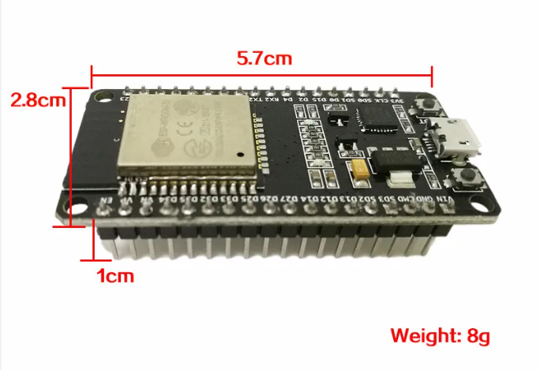

Caracteristicas del ESP32

-Procesador Tensilica Xtensa 32bits LX6 hasta 240MHz.
-Wi-Fi: 802.11b/g/n/e/i (802.11n @ 2.4 Ghz hasta 150 Mbit/s).
-Bluetooth: v4. 2 BR/EDR y bluetooth Low Energy (BLE).
-Rom:448 KiB.
-SRAM: 520 KiB.
-RTC slow SRAM: 8 KiB.
-RTC fast SRAM: 8 KiB.
-eFuse: 1 Kbit.
-19 canales de convertidor analógico a digital (ADC)
-3 interfaces SPI
-3 interfaces UART
-2 interfaces I2C
-16 canales de salida PWM
-2 convertidores de digital a analógico (DAC)
-2 interfaces I2S
-10 GPIO de detección capacitiva